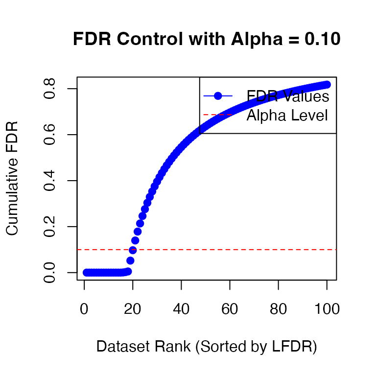
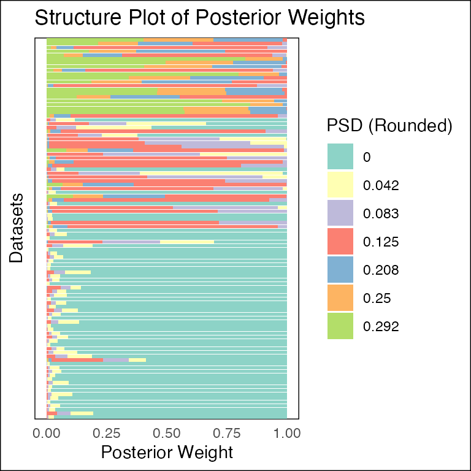

knitr::opts_chunk$set(fig.width = 8, fig.height = 6)
library(fashr)
# Plot power against FDR
power_versus_fdr <- function(fdr_result, true_indices, fdr_vec = seq(0.01,0.99,by = 0.01), plot = TRUE){
power <- numeric(length(fdr_vec))
for (i in 1:length(fdr_vec)){
significant_indices <- fdr_result$index[fdr_result$FDR < fdr_vec[i]]
power[i] <- length(intersect(significant_indices, true_indices))/length(true_indices)
}
result <- data.frame(fdr = fdr_vec, power = power)
if (plot){
plot(fdr_vec, power, type = "l", xlab = "FDR", ylab = "Power")
}
return(result)
}
# Plot calibration of FDR
calibration_fdr <- function(fdr_result, true_indices, fdr_vec = seq(0.01,0.99,by = 0.01), plot = TRUE){
true_discovery_rate <- numeric(length(fdr_vec))
for (i in 1:length(fdr_vec)){
significant_indices <- fdr_result$index[fdr_result$FDR < fdr_vec[i]]
true_discovery_rate[i] <- length(intersect(significant_indices, true_indices))/length(significant_indices)
}
result <- data.frame(fdr = fdr_vec, Tfdr = (1 - true_discovery_rate))
if (plot){
plot(Tfdr ~ fdr_vec, type = "l", xlab = "nominal FDR", ylab = "observed FDR", data = result)
lines(c(0,1), c(0,1), col = "red", lty = 2)
}
return(result)
}Overview
Suppose we have sets of eQTLs. The effect size estimate for the th eQTL at time , where , is denoted by . Given the true effect , the observed estimate is assumed to follow where denotes the standard error at time . Let and denote the vectors of effect size estimates and standard errors for the th eQTL, respectively.
The goal of fashr is to perform functional adaptive
shrinkage (FASH) for inferring the posterior distribution of the effect
size function
,
given the observed data
and
.
FASH assumes that all are i.i.d. draws from a common prior . The prior has the form of a finite mixture of Gaussian processes (GPs): Each GP component is specified via the differential equation: if , then where is a Gaussian white noise process and is a known th-order linear differential operator. The standard deviation parameter determines how much can deviate from the base model, defined as the null space .
Given a grid of , the prior mixing weights are estimated by maximizing the marginal likelihood of the observed effect size estimates: where denotes the marginal likelihood of under the th GP component. Based on the estimated prior , the posterior distribution for can be computed as: where is the posterior distribution under the th GP component.
In the following section, we illustrate this with simulated data.
Setup
We consider effect size estimates for eQTLs measured from day to day :
- There are 50 eQTLs that are non-dynamic, that is, their effect sizes remain constant over time (Category A).
- There are 30 eQTLs with linear dynamics, that is, their effect sizes change linearly over time (Category B).
- There are 20 eQTLs with nonlinear dynamics, that is, their effect sizes change nonlinearly over time (Category C).
For each eQTL at each time point, the standard error is randomly drawn from .
set.seed(1)
N <- 100
propA <- 0.5; propB <- 0.3; propC <- 0.2
sigma_vec <- c(0.05, 0.1, 0.2)
sizeA <- N * propA
data_sim_list_A <- lapply(1:sizeA, function(i) simulate_process(sd_poly = 0.2, type = "nondynamic", sd = sigma_vec, normalize = TRUE))
sizeB <- N * propB
if(sizeB > 0){
data_sim_list_B <- lapply(1:sizeB, function(i) simulate_process(sd_poly = 1, type = "linear", sd = sigma_vec, normalize = TRUE))
}else{
data_sim_list_B <- list()
}
sizeC <- N * propC
data_sim_list_C <- lapply(1:sizeC, function(i) simulate_process(sd_poly = 0, type = "nonlinear", sd = sigma_vec, sd_fun = 1, p = 1, normalize = TRUE))
datasets <- c(data_sim_list_A, data_sim_list_B, data_sim_list_C)
labels <- c(rep("A", sizeA), rep("B", sizeB), rep("C", sizeC))
indices_A <- 1:sizeA
indices_B <- (sizeA + 1):(sizeA + sizeB)
indices_C <- (sizeA + sizeB + 1):(sizeA + sizeB + sizeC)
dataset_labels <- rep(as.character(NA),100)
dataset_labels[indices_A] <- paste0("A",seq(1,length(indices_A)))
dataset_labels[indices_B] <- paste0("B",seq(1,length(indices_B)))
dataset_labels[indices_C] <- paste0("C",seq(1,length(indices_C)))
names(datasets) <- dataset_labels
par(mfrow = c(3, 3))
for(i in indices_A[1:3]){
plot(datasets[[i]]$x, datasets[[i]]$y, type = "p", col = "black", lwd = 2, xlab = "Time", ylab = "Effect Size", ylim = c(-1.5, 1.5), main = paste("Category A: ", i))
lines(datasets[[i]]$x, datasets[[i]]$truef, col = "red", lwd = 1)
}
for(i in indices_B[1:3]){
plot(datasets[[i]]$x, datasets[[i]]$y, type = "p", col = "black", lwd = 2, xlab = "Time", ylab = "Effect Size", ylim = c(-1.5, 1.5), main = paste("Category B: ", i))
lines(datasets[[i]]$x, datasets[[i]]$truef, col = "red", lwd = 1)
}
for(i in indices_C[1:3]){
plot(datasets[[i]]$x, datasets[[i]]$y, type = "p", col = "black", lwd = 2, xlab = "Time", ylab = "Effect Size", ylim = c(-1.5, 1.5), main = paste("Category C: ", i))
lines(datasets[[i]]$x, datasets[[i]]$truef, col = "red", lwd = 1)
}
Let’s take a look at the data structure:
length(datasets)## [1] 100
str(datasets[[1]])## 'data.frame': 16 obs. of 4 variables:
## $ x : int 1 2 3 4 5 6 7 8 9 10 ...
## $ y : num -0.0611 0.0756 0.039 -0.0311 -0.4429 ...
## $ truef: num 0 0 0 0 0 0 0 0 0 0 ...
## $ sd : num 0.2 0.05 0.1 0.05 0.2 0.2 0.1 0.1 0.2 0.2 ...Take a look at the true label of the datasets:
table(labels)## labels
## A B C
## 50 30 20Fitting FASH
The main function for fitting FASH is fash().
By default, users should provide a list of datasets
(data_list), and specify the column names for the effect
size (Y), its standard deviation (S), and the
time variable (smooth_var).
Computation can be parallelized by specifying the number of cores
(num_cores).
Reducing the number of basis functions (num_basis) can also
improve computational speed.
The function fash() sequentially performs the following
key steps:
-
Compute the likelihood matrix
for each eQTL and each GP component .
-
Estimate the prior mixing weights by maximizing the marginal likelihood:
-
Compute the posterior weights for each eQTL and GP component :
where is the local false discovery rate (LFDR) under the null hypothesis .
Testing Nonlinear Dynamic
We first aim to detect dynamic eQTLs with nonlinear dynamics (Category C).
In this case, we specify the base model
as the space of linear functions. Therefore, we choose
,
which is a second-order differential operator. This choice corresponds
to the second Integrated Wiener Process (IWP2) model
(order = 2).
We aim to obtain the posterior for each and test the null hypothesis at a given FDR level.
fash_fit <- fash(Y = "y", smooth_var = "x", S = "sd", data_list = datasets, order = 2)## Starting data setup...
## Completed data setup in 0.01 seconds.
## Starting likelihood computation...
## | | | 0% | |= | 1% | |= | 2% | |== | 3% | |=== | 4% | |==== | 5% | |==== | 6% | |===== | 7% | |====== | 8% | |====== | 9% | |======= | 10% | |======== | 11% | |======== | 12% | |========= | 13% | |========== | 14% | |========== | 15% | |=========== | 16% | |============ | 17% | |============= | 18% | |============= | 19% | |============== | 20% | |=============== | 21% | |=============== | 22% | |================ | 23% | |================= | 24% | |================== | 25% | |================== | 26% | |=================== | 27% | |==================== | 28% | |==================== | 29% | |===================== | 30% | |====================== | 31% | |====================== | 32% | |======================= | 33% | |======================== | 34% | |======================== | 35% | |========================= | 36% | |========================== | 37% | |=========================== | 38% | |=========================== | 39% | |============================ | 40% | |============================= | 41% | |============================= | 42% | |============================== | 43% | |=============================== | 44% | |================================ | 45% | |================================ | 46% | |================================= | 47% | |================================== | 48% | |================================== | 49% | |=================================== | 50% | |==================================== | 51% | |==================================== | 52% | |===================================== | 53% | |====================================== | 54% | |====================================== | 55% | |======================================= | 56% | |======================================== | 57% | |========================================= | 58% | |========================================= | 59% | |========================================== | 60% | |=========================================== | 61% | |=========================================== | 62% | |============================================ | 63% | |============================================= | 64% | |============================================== | 65% | |============================================== | 66% | |=============================================== | 67% | |================================================ | 68% | |================================================ | 69% | |================================================= | 70% | |================================================== | 71% | |================================================== | 72% | |=================================================== | 73% | |==================================================== | 74% | |==================================================== | 75% | |===================================================== | 76% | |====================================================== | 77% | |======================================================= | 78% | |======================================================= | 79% | |======================================================== | 80% | |========================================================= | 81% | |========================================================= | 82% | |========================================================== | 83% | |=========================================================== | 84% | |============================================================ | 85% | |============================================================ | 86% | |============================================================= | 87% | |============================================================== | 88% | |============================================================== | 89% | |=============================================================== | 90% | |================================================================ | 91% | |================================================================ | 92% | |================================================================= | 93% | |================================================================== | 94% | |================================================================== | 95% | |=================================================================== | 96% | |==================================================================== | 97% | |===================================================================== | 98% | |===================================================================== | 99% | |======================================================================| 100%
## Completed likelihood computation in 18.63 seconds.
## Starting empirical Bayes estimation...
## Completed empirical Bayes estimation in 0.00 seconds.
## fash object created successfully.
fash_fit## Fitted fash Object
## -------------------
## Number of datasets: 100
## Likelihood: gaussian
## Number of PSD grid values: 25 (initial), 5 (non-trivial)
## Order of Integrated Wiener Process (IWP): 2Here, the grid of values
is specified using the grid argument. Rather than being
defined on the original scale, the grid is specified on a
slightly transformed scale for easier interpretation.
Specifically, given a prediction step size
(pred_step), each grid point is defined as
,
where
is a positive scaling constant that depends only on
and
.
This scaling ensures that
can be interpreted as
,
representing the
-step
predictive standard deviation (PSD).
In the above example, we started with a default grid of 25 equally spaced PSD values from 0 to 2. After empirical Bayes estimation, the prior weights are nonzero only for 5 of these values. Grid values with zero prior weight are considered trivial and are removed automatically.
Let’s take a look at the estimated prior :
fash_fit$prior_weights## psd prior_weight
## 1 0.00000000 0.81777652
## 2 0.04166667 0.01639577
## 3 0.12500000 0.10205327
## 4 0.16666667 0.03736387
## 5 0.33333333 0.02641057We can take a look at their posterior weights in each GP component:

Besides the heatmap plot, we could also visualize the result using a structure plot:
plot(fash_fit, plot_type = "structure", discrete = TRUE)
We can then use fdr_control to test the null hypothesis
that
at a given FDR level. Specifically, the function takes the local false
discovery rate (LFDR) stored in the fash object and
computes the cumulative false discovery rate (FDR).
fdr_result <- fdr_control(fash_fit, alpha = 0.1, plot = TRUE)## 20 datasets are significant at alpha level 0.10. Total datasets tested: 100.
There are 20 eQTLs flagged as significant at FDR level 0.1. We can take out the indices of these eQTLs:
detected_indices <- fdr_result$fdr_results$index[fdr_result$fdr_results$FDR < 0.1]How many of the true (non-linear) dynamic eQTLs are detected?
sum(labels[detected_indices] == "C")/sizeC## [1] 0.95What is the false discovery rate?
## [1] 0.05Let’s take a look at the inferred eQTL effect
for the detected eQTLs. The function predict computes the
posterior distribution of the effect size
for a given eQTL
,
and then either returns the posterior summary or posterior samples,
depending on the arguments specified.
## 'data.frame': 16 obs. of 5 variables:
## $ x : int 1 2 3 4 5 6 7 8 9 10 ...
## $ mean : num 0.7516 0.3976 0.1714 -0.0433 -0.2541 ...
## $ median: num 0.752 0.401 0.172 -0.043 -0.253 ...
## $ lower : num 0.6546 0.1742 0.0788 -0.1927 -0.4172 ...
## $ upper : num 0.8467 0.5958 0.2659 0.1036 -0.0961 ...By default, predict returns the posterior information of
the effect size
for the eQTL specified by index, at each observed time
point. We can also specify the time points to predict the effect size
at:
fitted_beta_new <- predict(fash_fit, index = detected_indices[1], smooth_var = seq(0, 16, length.out = 100))
str(fitted_beta_new)## 'data.frame': 100 obs. of 5 variables:
## $ x : num 0 0.162 0.323 0.485 0.646 ...
## $ mean : num 1.148 1.084 1.02 0.956 0.892 ...
## $ median: num 1.137 1.076 1.014 0.951 0.888 ...
## $ lower : num 0.585 0.609 0.631 0.645 0.664 ...
## $ upper : num 1.79 1.63 1.47 1.3 1.14 ...It is also possible to store M posterior samples rather than the posterior summary:
fitted_beta_samples <- predict(fash_fit, index = detected_indices[1],
smooth_var = seq(0, 16, length.out = 100),
only.samples = TRUE, M = 50)
str(fitted_beta_samples)## num [1:100, 1:50] 0.865 0.854 0.844 0.834 0.823 ...Let’s plot the inferred effect size for the first detected eQTL:
plot(datasets[[detected_indices[1]]]$x, datasets[[detected_indices[1]]]$y, type = "p", col = "black", lwd = 2, xlab = "Time", ylab = "Effect Size")
lines(fitted_beta_new$x, fitted_beta_new$mean, col = "red", lwd = 2)
lines(datasets[[detected_indices[1]]]$x, datasets[[detected_indices[1]]]$truef, col = "black", lwd = 1, lty = 2)
polygon(c(fitted_beta_new$x, rev(fitted_beta_new$x)), c(fitted_beta_new$lower, rev(fitted_beta_new$upper)), col = rgb(1, 0, 0, 0.2), border = NA)
Testing Dynamic eQTLs
We may also be interested in detecting any dynamic eQTLs, including both linear and nonlinear cases (Categories B and C).
In this case, the base model
represents the space of constant functions. We specify
,
which is a first-order differential operator. This choice corresponds to
the first Integrated Wiener Process (IWP1) model
(order = 1).
fash_fit_2 <- fash(Y = "y", smooth_var = "x", S = "sd", data_list = datasets, order = 1)## Starting data setup...
## Completed data setup in 0.01 seconds.
## Starting likelihood computation...
## | | | 0% | |= | 1% | |= | 2% | |== | 3% | |=== | 4% | |==== | 5% | |==== | 6% | |===== | 7% | |====== | 8% | |====== | 9% | |======= | 10% | |======== | 11% | |======== | 12% | |========= | 13% | |========== | 14% | |========== | 15% | |=========== | 16% | |============ | 17% | |============= | 18% | |============= | 19% | |============== | 20% | |=============== | 21% | |=============== | 22% | |================ | 23% | |================= | 24% | |================== | 25% | |================== | 26% | |=================== | 27% | |==================== | 28% | |==================== | 29% | |===================== | 30% | |====================== | 31% | |====================== | 32% | |======================= | 33% | |======================== | 34% | |======================== | 35% | |========================= | 36% | |========================== | 37% | |=========================== | 38% | |=========================== | 39% | |============================ | 40% | |============================= | 41% | |============================= | 42% | |============================== | 43% | |=============================== | 44% | |================================ | 45% | |================================ | 46% | |================================= | 47% | |================================== | 48% | |================================== | 49% | |=================================== | 50% | |==================================== | 51% | |==================================== | 52% | |===================================== | 53% | |====================================== | 54% | |====================================== | 55% | |======================================= | 56% | |======================================== | 57% | |========================================= | 58% | |========================================= | 59% | |========================================== | 60% | |=========================================== | 61% | |=========================================== | 62% | |============================================ | 63% | |============================================= | 64% | |============================================== | 65% | |============================================== | 66% | |=============================================== | 67% | |================================================ | 68% | |================================================ | 69% | |================================================= | 70% | |================================================== | 71% | |================================================== | 72% | |=================================================== | 73% | |==================================================== | 74% | |==================================================== | 75% | |===================================================== | 76% | |====================================================== | 77% | |======================================================= | 78% | |======================================================= | 79% | |======================================================== | 80% | |========================================================= | 81% | |========================================================= | 82% | |========================================================== | 83% | |=========================================================== | 84% | |============================================================ | 85% | |============================================================ | 86% | |============================================================= | 87% | |============================================================== | 88% | |============================================================== | 89% | |=============================================================== | 90% | |================================================================ | 91% | |================================================================ | 92% | |================================================================= | 93% | |================================================================== | 94% | |================================================================== | 95% | |=================================================================== | 96% | |==================================================================== | 97% | |===================================================================== | 98% | |===================================================================== | 99% | |======================================================================| 100%
## Completed likelihood computation in 14.74 seconds.
## Starting empirical Bayes estimation...
## Completed empirical Bayes estimation in 0.00 seconds.
## fash object created successfully.
fash_fit_2## Fitted fash Object
## -------------------
## Number of datasets: 100
## Likelihood: gaussian
## Number of PSD grid values: 25 (initial), 7 (non-trivial)
## Order of Integrated Wiener Process (IWP): 1Take a look at the structure plot:
plot(fash_fit_2, discrete = TRUE)
Let’s test the null hypothesis that
at a given FDR level (specifying alpha = 0.1):
fdr_result_2 <- fdr_control(fash_fit_2, alpha = 0.1, plot = TRUE)## 49 datasets are significant at alpha level 0.10. Total datasets tested: 100.
detected_indices_2 <- fdr_result_2$fdr_results$index[fdr_result_2$fdr_results$FDR < 0.1]How many of the true dynamic eQTLs are detected?
sum(labels[detected_indices_2] != "A")/(sizeB + sizeC)## [1] 0.88What is the false discovery rate?
## [1] 0.1020408